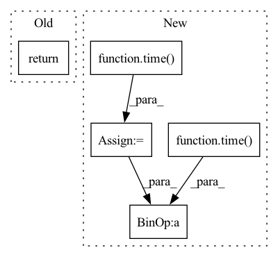

Pattern ID :21131

Before Change
if not hasattr(self, "interp_func"):
self.get_interpolator()
return interpolate_reg_grid(self.interp_func, pos)
After Change
self.nshells, dim=0)
print("___bas ", time()-t0)
t0 = time()
xyz = (pos.view(-1, self.nelec, 1, self.ndim) -
bas_coords[None, ...]).detach().numpy()
print("___ xyz", time()-t0)
t0 = time()
data = np.array([self.interp_func[ibas](xyz[:, :, ibas, :])
In pattern: SUPERPATTERN
Frequency: 3
Non-data size: 5
Instances
Fragment ID: 67778376
Project Name: nlesc-jcer/qmctorch
Commit Name: 7cfb514524df67f6b1b553207580f79b5dbf21a9
Time: 2020-05-13
Author: nicolas.gm.renaud@gmail.com
File Name: qmctorch/wavefunction/atomic_orbitals.py
M Class Name: AtomicOrbitals
N Class Name: AtomicOrbitals
M Method Name: interpolate(2)
N Method Name: interpolate(2)
M Parent Class: nn.Module
N Parent Class: nn.Module
M File Name: qmctorch/wavefunction/atomic_orbitals.py
N File Name: qmctorch/wavefunction/atomic_orbitals.py
M Start Line: 298
M End Line: 298
N Start Line: 323
N End Line: 342
'>
Before Change
secs = end - start
return size, secs
def test_p2p(comm=None, src=0, target=1):
After Change
size = 4 * np.prod(arr.shape, dtype=int)
duration = 0
for _ in range(iterations):
start = time()
comm.dlarrayNcclAllReduce(
arr, arr, ncclDataType_t.ncclFloat32, ncclRedOp_t.ncclSum, stream)
stream.sync()
duration += (time() - start)
local_duration = ht.array(np.array([duration, ]), ht.cpu())
comm.dlarrayNcclReduce(local_duration, local_duration,
'>
Fragment ID: 67778360
Project Name: hsword/hetu
Commit Name: de6a6b170885def9398eb2b8685f574fa3420140
Time: 2021-10-11
Author: 657671989@qq.com
File Name: tests/test_nccl_bandwidth.py
M Class Name: AnonimousClass
N Class Name: AnonimousClass
M Method Name: test_allreduce(4)
N Method Name: test_allreduce(1)
M Parent Class:
N Parent Class:
M File Name: tests/test_nccl_bandwidth.py
N File Name: tests/test_nccl_bandwidth.py
M Start Line: 7
M End Line: 23
N Start Line: 9
N End Line: 27
'>
Before Change
secs = end - start
// size: /Bytes
// dur_time: /s
return size, secs
// mpirun --allow-run-as-root --tag-output -np 2 python test_nccl_bandwidth.py
After Change
size = 4 * np.prod(arr.shape, dtype=int)
duration = 0
for _ in range(iterations):
start = time()
if comm.rank == 0:
comm.dlarraySend(arr, ncclDataType_t.ncclFloat32, 1, stream)
else:
comm.dlarrayRecv(arr, ncclDataType_t.ncclFloat32, 0, stream)
stream.sync()
duration += (time() - start)
print("Algorithm bandwidth: %f GB/s" %
(size * iterations / duration / (2 ** 30)))
'>
Fragment ID: 67778361
Project Name: hsword/hetu
Commit Name: de6a6b170885def9398eb2b8685f574fa3420140
Time: 2021-10-11
Author: 657671989@qq.com
File Name: tests/test_nccl_bandwidth.py
M Class Name: AnonimousClass
N Class Name: AnonimousClass
M Method Name: test_p2p(4)
N Method Name: test_p2p(3)
M Parent Class:
N Parent Class:
M File Name: tests/test_nccl_bandwidth.py
N File Name: tests/test_nccl_bandwidth.py
M Start Line: 26
M End Line: 45
N Start Line: 28
N End Line: 41